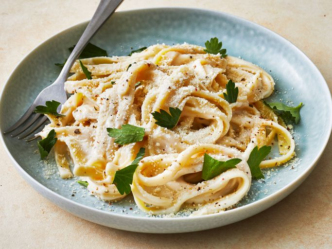

Alfredo Pasta

Description
Alfredo sauce is a creamy pasta sauce that's frequently paired with
fettuccine. The iconic dish, fettuccine Alfredo, is an Italian menu
staple.
Ingredients
- ½ cup butter
- 1 (8 ounce) package cream cheese
- 2 teaspoons garlic powder
- 2 cups milk
- 6 ounces grated Parmesan cheese
- ⅛ teaspoon ground black pepper
Steps
- Gather all ingredients.
- Melt butter in a medium, non-stick saucepan over medium heat. Add cream cheese and garlic powder, stirring with a wire whisk until smooth. Add milk, a little at a time, whisking to smooth out lumps. Stir in Parmesan cheese and pepper.
- Remove from heat when sauce reaches desired consistency. Sauce will thicken rapidly. Thin with milk if cooked too long.
- Toss with hot pasta to serve.